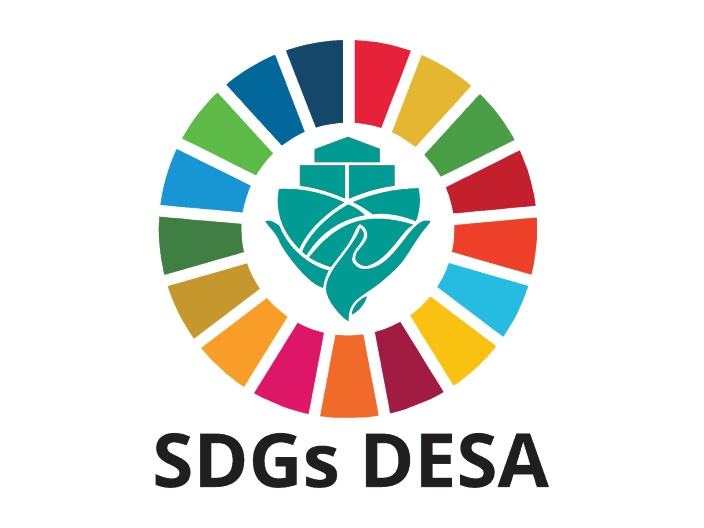

SDGs (Sustainable Development Goals) merupakan program berkelanjutan sasaran global tahun 2030 yang dideklarasikan baik oleh negara maju maupun negara berkembang di Sidang Umum PBB pada September 2015. SDGs ini diterapkan oleh Perserikatan Bangsa-Bangsa (PBB) dimana adanya komitmen global dan nasional dalam upaya untuk mensejahterakan masyarakat. Indonesia salah satu negara berkomitmen tinggi melaksanakan dan mencapai SDGs. Sejak SDGs dideklarasikan bulan September 2015, Indonesia telah terlibat aktif berbagai forum global. Sebagai salah satu wujud komitmen Indonesia dalam melaksanakan pencapaian SDGs, telah ditetapkan Peraturan Presiden (Perpres) Nomor 59 Tahun 2017 tentang Pelaksanaan Pencapaian Tujuan Pembangunan Berkelanjutan / Sustainable Development Goals (TPB / SDGs) sebagai landasan hukum pelaksanaan di Indonesia.
1. Peran pemerintah dan parlemen Peran pemerintah memainkan peran utama dalam merumuskan kebijakan, peraturan, dan alokasi anggaran untuk mencapai SDGs, memastikan pembangunan berkelanjutan menjadi prioritas dalam perencanaan nasional, serta mengkoordinasikan antar lembaga dan melaporkan kemajuan kepada PBB. Sementara itu, parlemen berperan penting dalam mendukung implementasi SDGs melalui pembentukan undang-undang yang relevan, pengawasan kebijakan pemerintah, serta penyusunan anggaran negara untuk memastikan dana yang dialokasikan tepat sasaran. Parlemen juga memfasilitasi diskusi publik dan melibatkan masyarakat dalam pembuatan kebijakan pembangunan berkelanjutan.
2. Peran akademis dan pakar Peran akademis dan pakar dalam pencapaian SDGs merupakan peran yang menyediakan pengetahuan, penelitian, dan analisis yang diperlukan untuk merumuskan kebijakan yang efektif dan berbasis bukti. Akademisi dan pakar ini berkontribusi melalui penelitian ilmiah, pengembangan teknologi, dan inovasi yang mendukung solusi terhadap tantangan pembangunan berkelanjutan. Kedua dari mereka juga berperan dalam memberikan wawasan dan rekomendasi kepada pemerintah, sektor swasta, dan masyarakat, serta memastikan bahwa kebijakan yang diterapkan didasarkan pada data yang valid dan relevan. Selain itu, akademisi dan pakar juga terlibat dalam pendidikan dan pelatihan, meningkatkan pemahaman masyarakat tentang SDGs dan pentingnya keberlanjutan.
3. Peran ormas dan media Peran ormas dan media dalam pencapaian SDGs sangat penting dalam mengedukasi, menyebarkan informasi, dan mendorong partisipasi aktif masyarakat. Peran ormas berfungsi untuk memobilisasi dukungan, mengadvokasi kebijakan, dan melaksanakan program berbasis komunitas yang mendukung keberlanjutan. Sedangkan peran media untuk meningkatkan kesadaran publik, menyebarkan informasi, dan mendorong partisipasi masyarakat dalam mencapai SDGs, serta mengawasi implementasi kebijakan terkait. Keduanya berperan sebagai penghubung antara masyarakat, pemerintah, dan sektor lainnya untuk mewujudkan tujuan pembangunan berkelanjutan.
4. Peran filantropi dan pelaku usaha Peran filantropi dan pelaku usaha dalam pencapaian SDGs sangat berkontribusi penting dalam menciptakan perubahan positif yang mendukung tujuan global pembangunan berkelanjutan. Filantropi, melalui sumbangan dana dan dukungan lainnya, membantu mendanai proyek-proyek sosial dan lingkungan yang mendukung tujuan keberlanjutan serta menciptakan inisiatif inovatif di sektor-sektor seperti pendidikan, kesehatan, dan pengentasan kemiskinan. Sementara itu, pelaku usaha dapat mendukung SDGs dengan mengadopsi praktik bisnis berkelanjutan, berinvestasi dalam teknologi ramah lingkungan, serta memperhatikan dampak sosial dan ekonomi dari kegiatan mereka. Pelaku usaha juga berperan dalam menciptakan lapangan pekerjaan dan meningkatkan ekonomi melalui investasi yang mendukung pembangunan berkelanjutan.